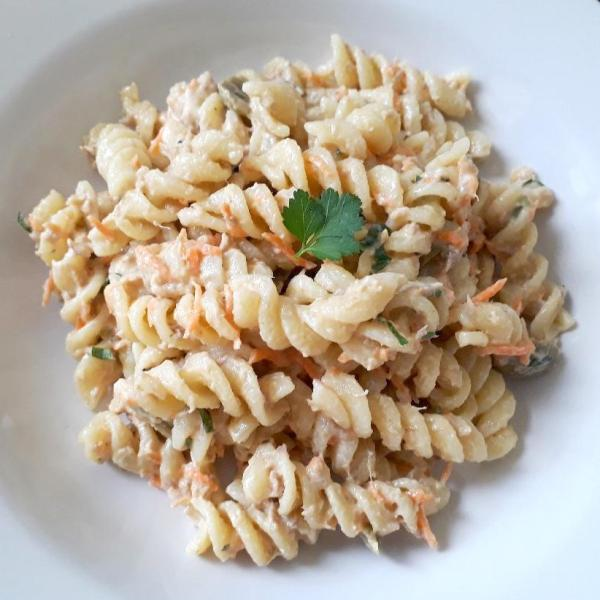

Pasta

Easy and simple Pasta with Tuna
Are you a broke student? Try this pasta is easy , nutricious and cheap
Ingredients
- 1 packet of pre-cooked pasta
- Salt
- Mayonnaise
- 1 can of tuna
Preparation
- In a medium pot , put 2 lts of water to boil , once the water is boiling add the salt
- Add the pasta and let it cook for 8-10 minutes
- Once the pasta is cooked , stir the water out
- Add Mayonnaise